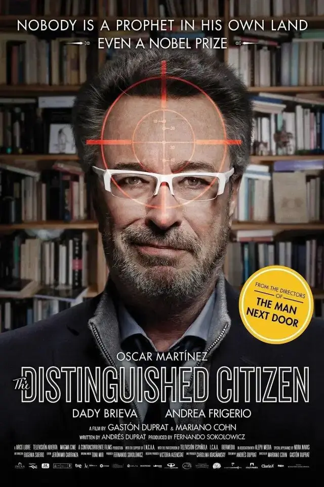
作者：梦旅人⋅吴晏
整编：李大虾
《杰出公民》是一部既魔幻现实又发人深省的获奖作品。
作家丹尼尔获得了诺贝尔文学奖，但似乎因此带来了他作家道路的终结，此后的5年他再也没写过东西，也谢绝了各种世界级活动的邀请。
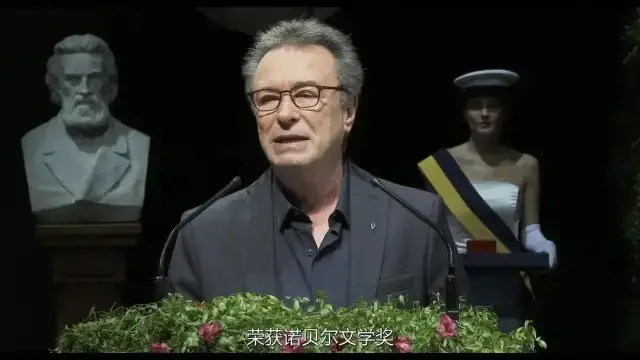
有一天他收到了来自故乡——阿根廷小镇萨拉斯的一封邀请函，邀请他回去参加小镇的艺术庆典，并授予他“杰出公民”的身份。
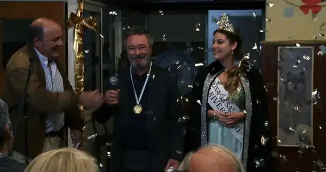
再三考虑之后他决定应邀，在背井离乡40年之后回到故里。
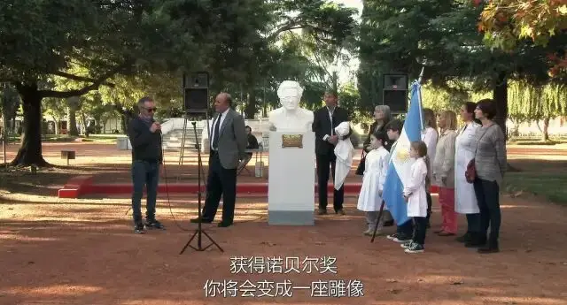
诺贝尔得主“荣归故里”，镇长让他和选美皇后一起，站在消防车顶，沿着街道向人们示意，人们的目光充满了敬仰。
可不久之后，丹尼尔却成为了人们的消费对象，正如他所说：”作为一个名人，我就像某种行头，被人从柜子里拿出来，穿着出席各种文化活动。“
镇长让丹尼尔参加各种文化活动，想通过丹尼尔提高人们对他的支持，为他的政治生涯铺路。
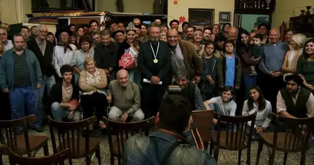
一个残疾孩子的父亲想让丹尼尔给他买轮椅，觉得是理所当然。
丹尼尔去参加电视台的采访，结果整个节目就是一个商业广告。
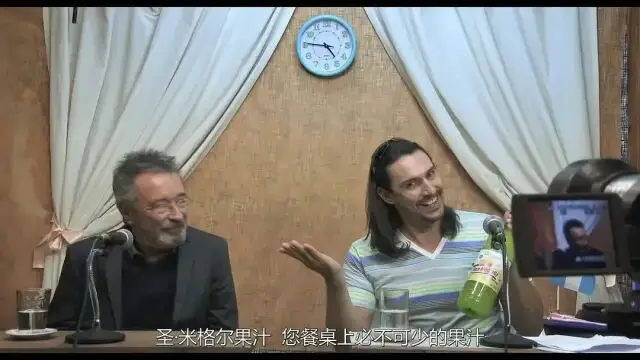
一个胖子拉住丹尼尔说他已去世的父亲是小说中的原型，要求丹尼尔去他家吃饭。
迷妹找上酒店来主动献身，目的是为了让丹尼尔带她离开这个乡村。
发小安东尼奥在丹尼尔面前炫耀他娶了丹尼尔曾经的女友艾琳，并邀请他去家里吃饭，在丹尼尔面前当面亲吻艾琳。
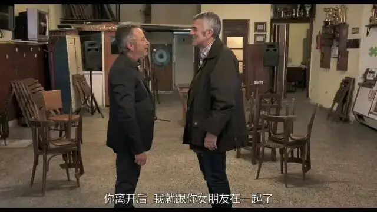
不仅如此，还说要带丹尼尔去狩猎，用猎枪来炫耀他的威风。
饭后又带丹尼尔去酒吧，吹嘘酒吧里的每个女人都被他征服了二三十次。
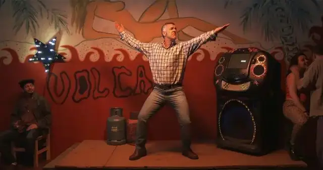
武力和性能力——人类最原始的两种能力，这就是安东尼奥唯一能胜过丹尼尔的东西了。
小镇的一切都没有变，和40年他逃离时一样，依然是那样落后和蛮荒。
丹尼尔逐渐变得愤怒，并开始表达异见和不满。
镇长在画展的颁奖仪式上发表讲话说要保护文化，丹尼尔却说：
“人们总是把文化视为一种薄弱易碎的东西，但文化其实是坚不可摧的，即使处于最糟糕的境地，它依旧可以生存。
在非洲草原上有一个原始部落，当地人的词汇里根本就没有‘自由’这个词，因为他们本身就是自由的。"
他戳穿了镇长以文化为名的政治把戏——把“文化”这个词挂在嘴边的地方，恰恰可能是文化的荒漠。
把自由挂在口边的地方，恰恰可能是最不自由的地方。
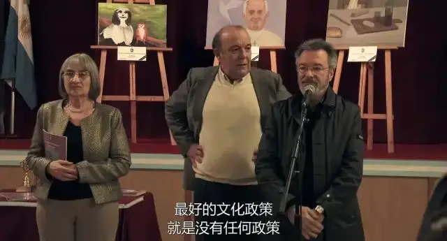
丹尼尔在对镇民传达着他的文化艺术理念和价值观。
但镇民们却认为他的小说是通过诋毁家乡来获得国外的赞誉，说他是“叛徒”。
正如电影海报上的那句话：“没有人在自己的家乡被尊为先知，即使是诺贝尔奖获得者。”一句改编自圣经中耶稣的话：“没有先知在自己家乡被人悦纳”。
渐渐地，小镇看待丹尼尔的眼神发生了变化，从起初的看热闹，到后面的冷漠，最后甚至变得对他越来越充满敌意。
很快，他从荣归故里变成了全镇公敌。
“我们之间唯一的共同点，就是都出生在同一个地方”。
他和小镇之间，彻底的决裂了。
这次返乡之旅，搅动的不仅是全乡人的蛮夷和落后，更搅动着丹尼尔自己内心深处的私欲和波澜。
丹尼尔在返乡途中汽车抛锚，与司机一起在野外露宿时讲了一个故事：一对孪生兄弟，弟弟因为嫉妒哥哥的财富和妻子而杀死了哥哥，取代了哥哥。
同时火光照在他的脸上，光影相间，一半光明一半黑暗，似乎就隐喻着人性的两面。
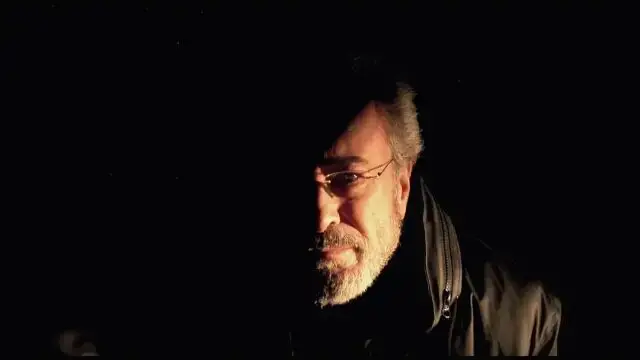
一面是崇高的理想，一面是虚荣与欲望。
一面在向小镇的人们宣扬着不与世俗为伍的艺术理念，一面却情不自禁吻了已为人妻的前女友，也没有禁住诱惑，接受了找上门来的迷妹的献身。
一面像先知一样被世人放逐，一面却像罪犯一样被处刑。
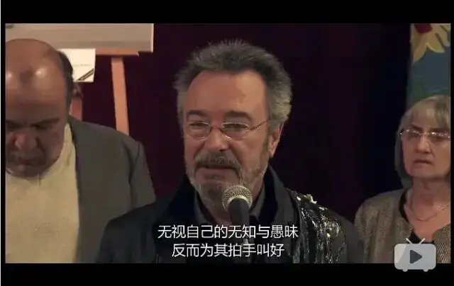
在对立冲突、割裂虚伪中，丹尼尔逐渐意识到自己的处境已经非常危险。
他本想要搭前女友艾琳的车逃离小镇，可在酒店门口等艾琳时等来的却是艾琳的丈夫安东尼奥和迷妹的男友，他们可能已经发现了丹尼尔与自己妻子和女友的越线行为。
他们让丹尼尔上车，带他去完成之前的“狩猎”计划。
丹尼尔站在车上，就像来时候站在消防车上一样，不同的是，现在是车是驶向夜色深处的狩猎场。
曾经路人的敬仰的目光现在已充满了敌意和嘲讽，就像是在被押赴刑场时的游街示众。
他像猎物一样，被拉到宰杀之地。
原本参加的狩猎活动的他变成了被狩猎的对象。
他在枪声中踉跄逃跑，一枪、两枪....最后一声枪响，他倒下了，以这种方式实现了他“作为一个名人，最缺乏的一样基本的东西就是我自己的死亡”的愿望。
“死亡，一切都变得平整有序，我的名字将被刻在永恒中，结束了。”
一个诺贝尔得主却“客死家乡”，这是多大的讽刺。
可影片并未到此结束，新一幕重新拉开了，真正耐人寻味的反讽在结尾处出现。
镜头转到了一场发布会，丹尼尔出现在台上，宣布着他发布的新书——《杰出公民》。
之前遇到的那些事情，都被丹尼尔写成了书。
他们在消费着丹尼尔，最后却被丹尼尔消费。
原来这是一个套娃似的故事中的故事。
有记者问丹尼尔写的这些经历是真实的么？他解开衣扣指着胸口上的伤疤说：“你们可以认为这是摔伤，或者，是枪伤。”
此刻，真相已不再重要......
这部电影蕴含着一种非常复杂微妙的东西，关于个体和群体，关于怀疑和自我怀疑，关于蛮荒与崇高，关于罪恶与圣洁。
这是一部很彻底的自黑之作，自黑的对象不仅是愚民，还有知识分子。
这不禁让我们不得不重新审视电影的开头和丹尼尔的动机。
丹尼尔生于家乡，后来因为对家乡的失望而远走他乡，并且获得诺比尔奖。
可获奖后的五年里，他没有写任何东西，并且谢绝了任何采访。
似乎，当时丹尼尔处于创作灵感枯竭的焦虑。
然后，丹尼尔接到了家乡的邀请，他一反高冷常态，不仅答应回乡，还出席了故乡各种“心怀鬼胎”、为他过去所不齿的活动。
种种迹象暗示，丹尼尔回乡之旅的目的并不单纯，他的遭遇也并不无辜。
这次魔幻、荒诞、凶险的回乡之旅，无疑给了他新的灵感。
家乡，这个让他不齿的地方，却屡屡是丹尼尔创作灵感的源泉。
这种关系构成了丹尼尔内心深处极为特殊的“乡愁”。
对于一个知识分子，他不同于其他人对故土、亲人的那种眷恋，他更多关注的是自己的精神追求与蛮荒故乡之间千丝万缕的微妙情感。
家乡让他失望，承载不了他的梦想和精神追求，但家乡的蛮荒却又是他表达愤怒、取之不竭的灵感之地。
更加特别的是，他用文字精心构建和表达的精神家园，在欧美，没有人会察觉和冒犯到蕴含其中知识分子的狂傲。
但在家乡，没有人顾及丹尼尔的面子，要上大号没有纸，那就直接用丹尼尔的著作当手纸。
家乡用一种近乎原始的粗鲁和直接挑战着一个知识分子的骄傲，不论你写的东西让别人多么热泪盈眶，但在这里，那些文字毫无价值，甚至，当手纸都有些硬。
这让丹尼尔很痛苦。
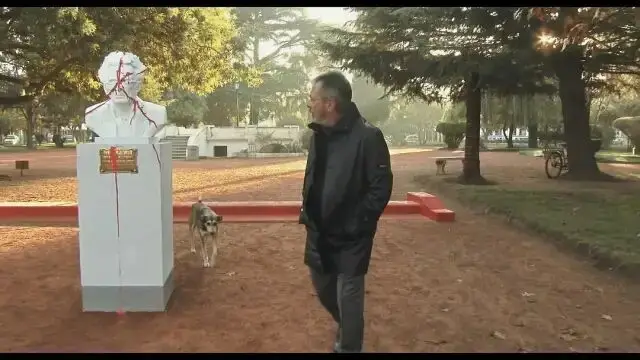
丹尼尔曾说“我这辈子做过的最值得称道的事，就是逃离了那个地方”。
40年前他只是身体逃出了这个小镇，也许他对家乡的改变还心存幻想。
但现在他的幻想也破灭，家乡容不下他的声音和表达。
这一次，心怀理想和特立独行的那个他已经死了，身体和心灵也彻底与故乡决裂，现在站在舞台上的，是那个重新融入到人群中，接受鲜花和掌声的他。
正如丹尼尔在书中所写的：“我书中的主人公，永远无法离开。而我，永远无法回去。”
荒蛮的家乡某种程度上成就了他，但家乡并不需要他的存在，他自己也不屑于回去。
丹尼尔就像那只离开了鸟群，独自淹死在池塘中的火烈鸟，愤懑、凄凉，却无以言表。
电影结尾处，丹尼尔在发布会上的微笑更像是难言苦涩之后的自嘲。
这让我不禁想起电影中一个场景，在从机场返回小镇的路上，汽车抛锚，他们在野外过夜，为了生火取暖，丹尼尔撕了自己的书来点火取暖。
“为了生存，我焚烧自己写的书”，这句话似乎也是整部电影的潜台词和最大的讽刺。
这种难言的苦涩和自嘲，在中国，又有多少人在经历？
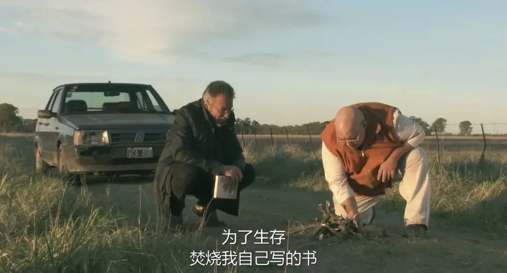
-END-
这里没有挑逗你眼目情欲的小鲜肉
也没有挑动你肉体情欲的段子
更没有膨胀你今生骄傲的鸡血
我们只在乎那些最质朴真诚的作品
在那里我们才能恢复真正的想象力
我们也坚信这才是我们真正需要的

ID:Six_hundred_hits
长按二维码，一键关注
【六百击】
电影评论
尽情分享朋友圈

微信二维码打赏通道